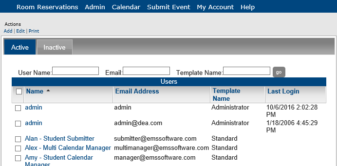

A user in Master Calendar is anyone who can log in to Master Calendar and who has a predefined level of access to specific calendars. For example, User A has requestor access to Calendar A, and view only access to Calendar B, User B has view only access to all calendars in Master Calendar, and so on. The user’s record that you define specifies this level of access. This topic guides you in searching for users, creating new ones, and working with existing ones.
Users Page

TIP: The Inactive tab lists all inactive users in EMS Master Calendar. You may find the user on either tab. Use the Print option to generate a report list of all users configured in Master Calender, which you can export as a PDF (default), Xls, Xlsx, Rtf, Mnt, Text, Image, or Csv.
NOTE: If your organization has purchased the optional Integrated Authentication module, a Lookup icon shows next to the Full Name field. Click this icon to open a list of users in your EMS system and automatically populate these fields.
Details Fields
| FIELD | DESCRIPTION |
|---|---|
Full Name | The full name for the user. |
The email address for the user. | |
Password | The login password for the user. NOTE: The password does not have any special rules. |
Confirm Password | Re-enter the password exactly as you entered it in the Password field. |
Phone | The phone number for the user. |
External Reference | Required only if you have LDAP security. Used to enable single sign-on through the separately purchased Integrated Authentication module. |
Account Type | Choose one of the three options from the dropdown:
|
Template | If you select Template as the Account Type, the Template dropdown appears. Choose a template from the dropdown. Select the Add Additional Permissions to Template User checkbox to add additional permissions. |
User Types
| User type | DESCRIPTION |
|---|---|
Standard | This is the default value for a user type. You must manually apply permissions for this type of user. |
Template | NOTE: This type of user is available only if you have active templates defined in Master Calendar. See Configure User Templates. If you select this type of user:
|
Administrator | This type of user has full access to all calendars in Master Calendar as well as to all system areas and functions. |

Calendar Access Type Fields
| field | DESCRIPTION |
|---|---|
Viewer | The user can only view events on the calendar. |
Requester | The user can view events on the calendar and submit events to the calendar; however, the submitted event is posted only if the Calendar Manager approves it. |
Calendar User | The user can view events on the calendar and submit events to the calendar and the events are automatically posted without approval by the Calendar Manager. |
Calendar Manager | The user can carry out all administration functions for the calendar (edit the calendar, create calender URLs, submit events to the calendar without approval, add/edit/delete special dates, and so on.) |
WARNING: If you do not select a calendar for the user, the calendar is considered to be a private calendar—the user cannot view events on the calendar, submit events to the calendar, and so on.
TIPS: Use the Active option to control whether the user is active or inactive in Master Calendar.
You can only Delete inactive users, so to delete a user from Master Calendar entirely, first set them to Inactive, and then on the Inactive tab you can select the user and click the Delete option.
You can view history on a user by clicking the History tab.